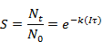
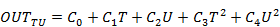
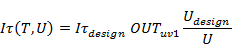
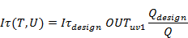

The 宾夕法尼亚州立大学 UVGI element 基于宾夕法尼亚州立大学所做的工作实现了紫外线杀菌辐射过滤器模型 [ 刘 2009a , 刘 2009b ]。过滤器效率（即紫外线输出）是温度、速度（气流速率）、过滤器相对寿命和设计紫外线输出率的函数。下面提供的单位是 ContamX 内部使用的单位。
姓名： 您想要用来标识此过滤器元素的唯一名称。
面积、深度和密度用于计算过滤介质的质量，该质量未用于此 UVGI 过滤器模型，因此可以忽略这些输入。
说明： 使用此字段提供过滤器元素的更详细描述。
编辑 元素 数据： 选择以定义此过滤器元素的特定属性。单位以默认计算单位提供。
设计生存能力， S 设计 : 输入所需的过滤器生存能力（0 到 1.0 之间的分数）。单程过滤器灭活效率等于1-S。
设计速度， u 设计 [米/秒] : 输入预期通过过滤器流动房间的设计最大速度。
设计生物体特异性速率常数， k 设计 [m2/J]: 输入设计最小微生物特定速率常数。这将用于确定设计紫外线剂量。您还需要为您想要通过该 UVGI 过滤的每个物种输入一个值 过滤元件（参见 物种特性 ).
设计质量流量， Fdes [公斤/秒] : 输入预期通过过滤器流动房间的设计最大气流速率。这将与设计速度一起用于计算横截面流动面积。
横截面流动面积， A [m2]: A = F 设计 / (rstd u 设计 )
设计剂量，（ It) 设计 [J/m2]: (It) 设计 = ln( S 设计 )/-k 设计
TU 常数： C0 到 C4 用于确定输出占设计的百分比， OUTTU ，基于当前条件，包括流速和温度。
使用年龄模型： 选择此选项可使输出也确定为灯寿命的函数。
年龄常数： K0和K1是用于确定输出百分比的系数， OUTage ，基于灯龄函数。
背景
最简单的形式是暴露于 UV-C 辐射的空气微生物的生存能力， S ，如方程 (uv-1) 所示，由单级指数衰减方程近似 [ 李和班弗莱斯 2013 ].
|
 |
(紫外线-1) |
效率就是 1 减去生存能力。
|
|
（紫外线2） |
紫外线剂量是一段时间内的辐照度， It 。出于设计目的，人们可能会指定一种设计生存能力， S 设计 ，以及设计最小微生物特定速率常数， k 设计 ，确定所需的设计紫外线剂量：

|
（紫外线3） |
相关速率常数大于或等于的任何微生物 k 设计 最多有一个生存能力 S 设计 .
紫外线输出通过两种关系确定为额定输出的百分比：一种基于灯周围气流的当前条件，即温度和速度，另一种基于灯的寿命[ 刘 2009a , 刘 2009b ]。这些关系分别如方程 (uv-4) 和 (uv-5) 所示。根据用户定义的正气流方向，分别从上游房间或接合处获得气流路径和管道的温度。
|
 |
(UV-4) |

|
（紫外线5） |
等式 (uv-4) 和 (uv-5) 相乘以提供分数 UV 输出 OUTuv1 由方程（uv-6）提供。 OUTage 保持在默认值 1.0，直到经过的模拟时间达到 t100 如方程 (uv-7) 所定义。

|
（紫外线6） |

|
（紫外线7） |
在模拟过程中，将根据等式 (uv-2) 根据相对于设计条件的输出来计算 UV 效率，其中 It (T,U) 将由以下方程（uv-8）确定或作为方程（uv-9）中所示的气流速率的函数。
|
 |
(UV-8) |
|
 |
（紫外线9） |